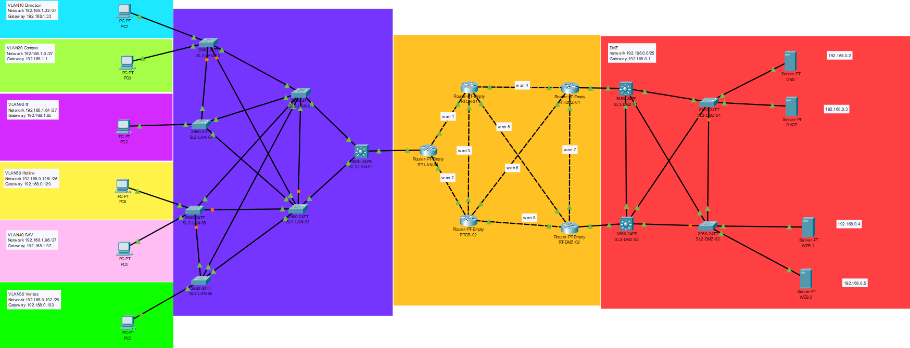

Infrastructure · Cisco Packet Tracer
Infrastructure réseau d'entreprise
Conception et configuration d'une infrastructure réseau simulée sous Cisco Packet Tracer, avec segmentation par VLAN, plan d'adressage VLSM, routage dynamique OSPF et services réseau.
Télécharger le fichier Packet Tracer
Présentation
Conception et configuration d'une infrastructure réseau simulée sous Cisco Packet Tracer, avec segmentation par VLAN, plan d'adressage VLSM, routage dynamique et services réseau.
Le projet comprend des routeurs, des commutateurs de couche 2 et 3, une DMZ ainsi que des serveurs DHCP, DNS et Web.
Environnement technique
- Cisco Packet Tracer
- Routeurs Cisco PT-Empty
- Commutateurs Cisco Catalyst 2960 et 3650
- Routage inter-VLAN avec sous-interfaces 802.1Q
- Routage dynamique OSPF
- Haute disponibilité HSRP
- Commutation et redondance RSTP / Rapid-PVST+
- Services DHCP, DNS et Web
Architecture et adressage
Le plan d'adressage a été construit à partir du réseau privé 192.168.0.0/16, avec la méthode VLSM afin d'adapter la taille de chaque sous-réseau au nombre de postes prévu.
| Zone | Réseau | Masque | Passerelle |
|---|---|---|---|
| DMZ | 192.168.0.0/25 | 255.255.255.128 | 192.168.0.1 |
| VLAN 50 — Hotline | 192.168.0.128/26 | 255.255.255.192 | 192.168.0.129 |
| VLAN 30 — Vente | 192.168.0.192/26 | 255.255.255.192 | 192.168.0.193 |
| VLAN 20 — Comptabilité | 192.168.1.0/27 | 255.255.255.224 | 192.168.1.1 |
| VLAN 10 — Direction/RH | 192.168.1.32/27 | 255.255.255.224 | 192.168.1.33 |
| VLAN 90 — IT | 192.168.1.64/27 | 255.255.255.224 | 192.168.1.65 |
| VLAN 40 — SAV | 192.168.1.96/27 | 255.255.255.224 | 192.168.1.97 |
| Liaisons WAN | 192.168.1.128/29 à 192.168.1.156/29 | 255.255.255.248 | Selon la liaison |
Les passerelles sont positionnées au début de chaque réseau. Les liaisons WAN utilisent des sous-réseaux dimensionnés pour deux équipements.
VLAN configurés
VLAN 10 Direction et RH
VLAN 20 Comptabilité
VLAN 30 Vente
VLAN 40 SAV
VLAN 50 Hotline
VLAN 90 ITLes ports reliant deux équipements réseau sont configurés en trunk. Les ports reliant un poste ou un serveur sont configurés en access dans le VLAN correspondant.
Configuration de base des équipements Cisco
La configuration de base suivante a été appliquée aux routeurs et aux commutateurs. Le mot de passe d'origine n'est pas reproduit dans ce document destiné au portfolio.
enable
configure terminal
hostname <NOM_MACHINE>
enable secret <MOT_DE_PASSE>
ip domain name pear.com
username Admin secret <MOT_DE_PASSE>
crypto key generate rsa
1024
line vty 0 4
transport input ssh
login localCette configuration permet l'identification des équipements, la sécurisation du mode privilégié et l'administration distante en SSH.
Routage inter-VLAN et relais DHCP
Le routeur connecté au commutateur de couche 3 utilise des sous-interfaces afin de fournir une passerelle à chaque VLAN.
interface gigabitEthernet 6/0.<NUMERO_VLAN>
encapsulation dot1Q <NUMERO_VLAN>
ip address <PASSERELLE_VLAN> <MASQUE>
ip helper-address 192.168.0.3Le relais DHCP redirige les requêtes des VLAN vers le serveur SRV-DHCP — 192.168.0.3.
Routage OSPF
Le routage dynamique a été configuré avec le processus OSPF 500, dans l'area 0. Les réseaux directement connectés aux routeurs sont annoncés, notamment les liaisons WAN, les VLAN du LAN et la DMZ.
router ospf 500
network <ADRESSE_RESEAU> <WILDCARD> area 0Haute disponibilité HSRP
HSRP a été mis en place sur les routeurs de la DMZ afin de fournir une passerelle virtuelle. RT-DMZ-01 est le routeur prioritaire.
interface <INTERFACE_DMZ>
standby version 2
standby 10 ip 192.168.0.1
standby 10 priority 250
standby 10 preemptSur le routeur secondaire, la même adresse virtuelle est utilisée avec une priorité plus faible :
interface <INTERFACE_DMZ>
standby version 2
standby 10 ip 192.168.0.1
standby 10 priority 7Configuration des commutateurs
Adresse de gestion
Les commutateurs de la partie VLAN sont administrés depuis le VLAN IT.
ip default-gateway 172.16.1.65
interface vlan 90
ip address <IP_DE_GESTION> 255.255.255.224
no shutdownCréation des VLAN
vlan <NUMERO_VLAN>
name <NOM_VLAN>Port trunk
interface <PORT>
switchport mode trunkPort access
interface <PORT>
switchport mode access
switchport access vlan <NUMERO_VLAN>Redondance de niveau 2 avec Rapid-PVST+
Rapid-PVST+ a été activé sur les commutateurs LAN et DMZ. Les priorités ont été ajustées pour que les commutateurs de couche 3 désignés soient les root bridges, avec des commutateurs secondaires définis par une priorité intermédiaire.
spanning-tree mode rapid-pvst
spanning-tree vlan 1-100 priority <PRIORITE>Les ports connectés aux postes et aux serveurs ont été configurés en PortFast afin d'accélérer leur mise en service :
interface <PORT>
spanning-tree portfastServices réseau
DHCP
Le serveur SRV-DHCP — 192.168.0.3 fournit automatiquement les adresses IP aux postes clients de chaque VLAN. Les étendues DHCP ont été prévues selon les besoins de chaque réseau.
DNS
Le serveur SRV-DNS — 192.168.0.2 utilise le domaine :
pear.comDes enregistrements de type A ont été prévus pour les serveurs en respectant leur hostname. Les alias suivants ont également été configurés :
www.pear.com -> SRV-WEB1
intra.pear.com -> SRV-WEB2Serveurs de la DMZ
| SRV-DNS | 192.168.0.2 |
| SRV-DHCP | 192.168.0.3 |
| SRV-WEB1 | 192.168.0.4 |
| SRV-WEB2 | 192.168.0.5 |
Résultat
Cette réalisation met en œuvre une infrastructure segmentée et redondante, avec séparation des usages par VLAN, adressage optimisé par VLSM, routage OSPF, passerelle hautement disponible avec HSRP, prévention des boucles avec Rapid-PVST+, administration SSH et services DHCP/DNS pour les utilisateurs et les serveurs.
Le fichier Cisco Packet Tracer associé permet de visualiser la topologie et de vérifier les configurations réalisées.
Les mots de passe, clés privées et autres secrets ont été retirés de ce document et remplacés par des variables afin d'éviter de publier des informations sensibles dans un portfolio.